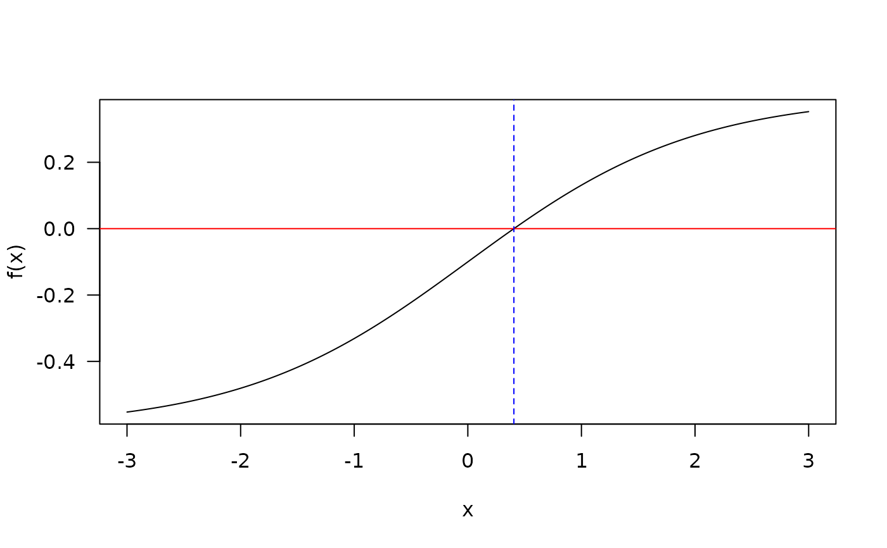

The function PBA searches a specified interval for a root
(i.e., zero) of the function f(x) with respect to its first argument.
However, this function differs from deterministic cousins such as
uniroot in that f may contain stochastic error
components, and instead provides a Bayesian interval where the root
is likely to lie. Note that it is assumed that E[f(x)] is non-decreasing
in x and that the root is between the search interval (evaluated
approximately when check.interval=TRUE).
See Waeber, Frazier, and Henderson (2013) for details.
Usage
PBA(
f,
interval,
...,
p = 0.6,
integer = FALSE,
tol = if (integer) 0.01 else 1e-04,
maxiter = 300L,
miniter = 100L,
wait.time = NULL,
f.prior = NULL,
resolution = 10000L,
check.interval = TRUE,
check.interval.only = FALSE,
verbose = TRUE
)
# S3 method for class 'PBA'
print(x, ...)
# S3 method for class 'PBA'
plot(x, type = "posterior", main = "Probabilistic Bisection Posterior", ...)Arguments
- f
noisy function for which the root is sought
- interval
a vector containing the end-points of the interval to be searched for the root
- ...
additional named arguments to be passed to
f- p
assumed constant for probability of correct responses (must be > 0.5)
- integer
logical; should the values of the root be considered integer or numeric? The former uses a discreet grid to track the updates, while the latter currently creates a grid with
resolutionpoints- tol
tolerance criteria for convergence based on average of the
f(x)evaluations- maxiter
the maximum number of iterations (default 300)
- miniter
minimum number of iterations (default 100)
- wait.time
(optional) instead of terminating after specific estimate criteria are satisfied (e.g.,
tol), terminate after a specific wait time. Input is specified either as a numeric vector in seconds or as a character vector to be formatted bytimeFormater. Note that users should increase the number ofmaxiteras well so that termination can occur if either the maximum iterations are satisfied or the specified wait time has elapsed (whichever occurs first)- f.prior
density function indicating the likely location of the prior (e.g., if root is within [0,1] then
dunifworks, otherwise custom functions will be required)- resolution
constant indicating the number of equally spaced grid points to track when
integer = FALSE.- check.interval
logical; should an initial check be made to determine whether
f(interval[1L])andf(interval[2L])have opposite signs? Default is TRUE- check.interval.only
logical; return only TRUE or FALSE to test whether there is a likely root given
interval? Setting this to TRUE can be useful when you are unsure about the root location interval and may want to use a higherreplicationinput fromSimSolve- verbose
logical; should the iterations and estimate be printed to the console?
- x
an object of class
PBA- type
type of plot to draw for PBA object. Can be either 'posterior' or 'history' to plot the PBA posterior distribution or the mediation iteration history
- main
plot title
References
Horstein, M. (1963). Sequential transmission using noiseless feedback. IEEE Trans. Inform. Theory, 9(3):136-143.
Waeber, R., Frazier, P. I. & Henderson, S. G. (2013). Bisection Search with Noisy Responses. SIAM Journal on Control and Optimization, Society for Industrial & Applied Mathematics (SIAM), 51, 2261-2279.
Examples
# find x that solves f(x) - b = 0 for the following
f.root <- function(x, b = .6) 1 / (1 + exp(-x)) - b
f.root(.3)
#> [1] -0.02555748
xs <- seq(-3,3, length.out=1000)
plot(xs, f.root(xs), type = 'l', ylab = "f(x)", xlab='x', las=1)
abline(h=0, col='red')
retuni <- uniroot(f.root, c(0,1))
retuni
#> $root
#> [1] 0.4054644
#>
#> $f.root
#> [1] -1.772764e-07
#>
#> $iter
#> [1] 4
#>
#> $init.it
#> [1] NA
#>
#> $estim.prec
#> [1] 6.103516e-05
#>
abline(v=retuni$root, col='blue', lty=2)

# PBA without noisy root
retpba <- PBA(f.root, c(0,1))
#>
Iter: 1; Median = 0.500; E(f(x)) = 0.02
Iter: 2; Median = 0.417; E(f(x)) = 0.01
Iter: 3; Median = 0.347; E(f(x)) = 0.00
Iter: 4; Median = 0.405; E(f(x)) = 0.00
Iter: 5; Median = 0.472; E(f(x)) = 0.01
Iter: 6; Median = 0.413; E(f(x)) = 0.00
Iter: 7; Median = 0.367; E(f(x)) = 0.00
Iter: 8; Median = 0.407; E(f(x)) = 0.00
Iter: 9; Median = 0.374; E(f(x)) = 0.00
Iter: 10; Median = 0.403; E(f(x)) = 0.00
Iter: 11; Median = 0.440; E(f(x)) = 0.00
Iter: 12; Median = 0.406; E(f(x)) = 0.00
Iter: 13; Median = 0.384; E(f(x)) = 0.00
Iter: 14; Median = 0.404; E(f(x)) = 0.00
Iter: 15; Median = 0.425; E(f(x)) = 0.00
Iter: 16; Median = 0.406; E(f(x)) = 0.00
Iter: 17; Median = 0.391; E(f(x)) = 0.00
Iter: 18; Median = 0.405; E(f(x)) = 0.00
Iter: 19; Median = 0.415; E(f(x)) = 0.00
Iter: 20; Median = 0.406; E(f(x)) = 0.00
Iter: 21; Median = 0.396; E(f(x)) = 0.00
Iter: 22; Median = 0.405; E(f(x)) = 0.00
Iter: 23; Median = 0.410; E(f(x)) = 0.00
Iter: 24; Median = 0.405; E(f(x)) = 0.00
Iter: 25; Median = 0.409; E(f(x)) = 0.00
Iter: 26; Median = 0.405; E(f(x)) = 0.00
Iter: 27; Median = 0.408; E(f(x)) = 0.00
Iter: 28; Median = 0.406; E(f(x)) = 0.00
Iter: 29; Median = 0.404; E(f(x)) = 0.00
Iter: 30; Median = 0.406; E(f(x)) = 0.00
Iter: 31; Median = 0.404; E(f(x)) = 0.00
Iter: 32; Median = 0.405; E(f(x)) = 0.00
Iter: 33; Median = 0.406; E(f(x)) = 0.00
Iter: 34; Median = 0.406; E(f(x)) = 0.00
Iter: 35; Median = 0.405; E(f(x)) = 0.00
Iter: 36; Median = 0.406; E(f(x)) = 0.00
Iter: 37; Median = 0.405; E(f(x)) = 0.00
Iter: 38; Median = 0.405; E(f(x)) = 0.00
Iter: 39; Median = 0.406; E(f(x)) = 0.00
Iter: 40; Median = 0.406; E(f(x)) = 0.00
Iter: 41; Median = 0.405; E(f(x)) = 0.00
Iter: 42; Median = 0.406; E(f(x)) = 0.00
Iter: 43; Median = 0.405; E(f(x)) = 0.00
Iter: 44; Median = 0.405; E(f(x)) = 0.00
Iter: 45; Median = 0.406; E(f(x)) = 0.00
Iter: 46; Median = 0.405; E(f(x)) = 0.00
Iter: 47; Median = 0.406; E(f(x)) = 0.00
Iter: 48; Median = 0.406; E(f(x)) = 0.00
Iter: 49; Median = 0.406; E(f(x)) = 0.00
Iter: 50; Median = 0.406; E(f(x)) = 0.00
Iter: 51; Median = 0.405; E(f(x)) = 0.00
Iter: 52; Median = 0.405; E(f(x)) = 0.00
Iter: 53; Median = 0.406; E(f(x)) = 0.00
Iter: 54; Median = 0.406; E(f(x)) = 0.00
Iter: 55; Median = 0.405; E(f(x)) = 0.00
Iter: 56; Median = 0.406; E(f(x)) = 0.00
Iter: 57; Median = 0.405; E(f(x)) = 0.00
Iter: 58; Median = 0.405; E(f(x)) = 0.00
Iter: 59; Median = 0.405; E(f(x)) = 0.00
Iter: 60; Median = 0.406; E(f(x)) = 0.00
Iter: 61; Median = 0.405; E(f(x)) = 0.00
Iter: 62; Median = 0.406; E(f(x)) = 0.00
Iter: 63; Median = 0.406; E(f(x)) = 0.00
Iter: 64; Median = 0.405; E(f(x)) = 0.00
Iter: 65; Median = 0.406; E(f(x)) = 0.00
Iter: 66; Median = 0.406; E(f(x)) = 0.00
Iter: 67; Median = 0.405; E(f(x)) = 0.00
Iter: 68; Median = 0.405; E(f(x)) = 0.00
Iter: 69; Median = 0.406; E(f(x)) = 0.00
Iter: 70; Median = 0.406; E(f(x)) = 0.00
Iter: 71; Median = 0.406; E(f(x)) = 0.00
Iter: 72; Median = 0.406; E(f(x)) = 0.00
Iter: 73; Median = 0.406; E(f(x)) = 0.00
Iter: 74; Median = 0.405; E(f(x)) = 0.00
Iter: 75; Median = 0.406; E(f(x)) = 0.00
Iter: 76; Median = 0.405; E(f(x)) = 0.00
Iter: 77; Median = 0.406; E(f(x)) = 0.00
Iter: 78; Median = 0.405; E(f(x)) = 0.00
Iter: 79; Median = 0.405; E(f(x)) = 0.00
Iter: 80; Median = 0.405; E(f(x)) = 0.00
Iter: 81; Median = 0.405; E(f(x)) = 0.00
Iter: 82; Median = 0.406; E(f(x)) = 0.00
Iter: 83; Median = 0.406; E(f(x)) = 0.00
Iter: 84; Median = 0.406; E(f(x)) = 0.00
Iter: 85; Median = 0.406; E(f(x)) = 0.00
Iter: 86; Median = 0.406; E(f(x)) = 0.00
Iter: 87; Median = 0.406; E(f(x)) = 0.00
Iter: 88; Median = 0.406; E(f(x)) = 0.00
Iter: 89; Median = 0.406; E(f(x)) = 0.00
Iter: 90; Median = 0.406; E(f(x)) = 0.00
Iter: 91; Median = 0.406; E(f(x)) = 0.00
Iter: 92; Median = 0.406; E(f(x)) = 0.00
Iter: 93; Median = 0.406; E(f(x)) = 0.00
Iter: 94; Median = 0.405; E(f(x)) = 0.00
Iter: 95; Median = 0.406; E(f(x)) = 0.00
Iter: 96; Median = 0.406; E(f(x)) = 0.00
Iter: 97; Median = 0.406; E(f(x)) = 0.00
Iter: 98; Median = 0.406; E(f(x)) = 0.00
Iter: 99; Median = 0.405; E(f(x)) = 0.00
Iter: 100; Median = 0.406; E(f(x)) = 0.00
Iter: 101; Median = 0.405; E(f(x)) = 0.00
Iter: 102; Median = 0.405; E(f(x)) = 0.00
Iter: 103; Median = 0.405; E(f(x)) = 0.00
Iter: 104; Median = 0.405; E(f(x)) = 0.00
Iter: 105; Median = 0.406; E(f(x)) = 0.00
Iter: 106; Median = 0.406; E(f(x)) = 0.00
Iter: 107; Median = 0.406; E(f(x)) = 0.00
Iter: 108; Median = 0.405; E(f(x)) = 0.00
Iter: 109; Median = 0.405; E(f(x)) = 0.00
Iter: 110; Median = 0.405; E(f(x)) = 0.00
Iter: 111; Median = 0.406; E(f(x)) = 0.00
Iter: 112; Median = 0.405; E(f(x)) = 0.00
Iter: 113; Median = 0.405; E(f(x)) = 0.00
Iter: 114; Median = 0.406; E(f(x)) = 0.00
Iter: 115; Median = 0.406; E(f(x)) = 0.00
Iter: 116; Median = 0.406; E(f(x)) = 0.00
Iter: 117; Median = 0.406; E(f(x)) = 0.00
Iter: 118; Median = 0.406; E(f(x)) = 0.00
Iter: 119; Median = 0.406; E(f(x)) = 0.00
Iter: 120; Median = 0.405; E(f(x)) = 0.00
Iter: 121; Median = 0.406; E(f(x)) = 0.00
Iter: 122; Median = 0.405; E(f(x)) = 0.00
Iter: 123; Median = 0.406; E(f(x)) = 0.00
Iter: 124; Median = 0.405; E(f(x)) = 0.00
Iter: 125; Median = 0.406; E(f(x)) = 0.00
Iter: 126; Median = 0.405; E(f(x)) = 0.00
Iter: 127; Median = 0.405; E(f(x)) = 0.00
Iter: 128; Median = 0.405; E(f(x)) = 0.00
Iter: 129; Median = 0.405; E(f(x)) = 0.00
Iter: 130; Median = 0.405; E(f(x)) = 0.00
Iter: 131; Median = 0.406; E(f(x)) = 0.00
Iter: 132; Median = 0.406; E(f(x)) = 0.00
Iter: 133; Median = 0.406; E(f(x)) = 0.00
Iter: 134; Median = 0.406; E(f(x)) = 0.00
Iter: 135; Median = 0.405; E(f(x)) = 0.00
Iter: 136; Median = 0.405; E(f(x)) = 0.00
Iter: 137; Median = 0.406; E(f(x)) = 0.00
Iter: 138; Median = 0.406; E(f(x)) = 0.00
Iter: 139; Median = 0.405; E(f(x)) = 0.00
Iter: 140; Median = 0.405; E(f(x)) = 0.00
Iter: 141; Median = 0.405; E(f(x)) = 0.00
Iter: 142; Median = 0.405; E(f(x)) = 0.00
Iter: 143; Median = 0.405; E(f(x)) = 0.00
Iter: 144; Median = 0.406; E(f(x)) = 0.00
Iter: 145; Median = 0.405; E(f(x)) = 0.00
Iter: 146; Median = 0.405; E(f(x)) = 0.00
Iter: 147; Median = 0.406; E(f(x)) = 0.00
Iter: 148; Median = 0.405; E(f(x)) = 0.00
Iter: 149; Median = 0.406; E(f(x)) = 0.00
Iter: 150; Median = 0.406; E(f(x)) = 0.00
Iter: 151; Median = 0.405; E(f(x)) = 0.00
Iter: 152; Median = 0.405; E(f(x)) = 0.00
Iter: 153; Median = 0.406; E(f(x)) = 0.00
Iter: 154; Median = 0.405; E(f(x)) = 0.00
Iter: 155; Median = 0.406; E(f(x)) = 0.00
Iter: 156; Median = 0.405; E(f(x)) = 0.00
Iter: 157; Median = 0.405; E(f(x)) = 0.00
Iter: 158; Median = 0.405; E(f(x)) = 0.00
Iter: 159; Median = 0.405; E(f(x)) = 0.00
Iter: 160; Median = 0.405; E(f(x)) = 0.00
Iter: 161; Median = 0.406; E(f(x)) = 0.00
Iter: 162; Median = 0.405; E(f(x)) = 0.00
Iter: 163; Median = 0.406; E(f(x)) = 0.00
Iter: 164; Median = 0.405; E(f(x)) = 0.00
Iter: 165; Median = 0.405; E(f(x)) = 0.00
Iter: 166; Median = 0.406; E(f(x)) = 0.00
Iter: 167; Median = 0.406; E(f(x)) = 0.00
Iter: 168; Median = 0.405; E(f(x)) = 0.00
Iter: 169; Median = 0.405; E(f(x)) = 0.00
Iter: 170; Median = 0.406; E(f(x)) = 0.00
Iter: 171; Median = 0.406; E(f(x)) = 0.00
#> Error in PBA(f.root, c(0, 1)): object 'predCI' not found
retpba
#> Error: object 'retpba' not found
retpba$root
#> Error: object 'retpba' not found
plot(retpba)
#> Error: object 'retpba' not found
plot(retpba, type = 'history')
#> Error: object 'retpba' not found
# Same problem, however root function is now noisy. Hence, need to solve
# fhat(x) - b + e = 0, where E(e) = 0
f.root_noisy <- function(x) 1 / (1 + exp(-x)) - .6 + rnorm(1, sd=.02)
sapply(rep(.3, 10), f.root_noisy)
#> [1] -0.039123616 -0.001791425 -0.023427438 -0.028433850 -0.066480674
#> [6] -0.006044210 -0.018417790 -0.017867592 -0.033764287 -0.023880012
# uniroot "converges" unreliably
set.seed(123)
uniroot(f.root_noisy, c(0,1))$root
#> [1] 0.3748233
uniroot(f.root_noisy, c(0,1))$root
#> [1] 0.3785736
uniroot(f.root_noisy, c(0,1))$root
#> [1] 0.4954932
# probabilistic bisection provides better convergence
retpba.noise <- PBA(f.root_noisy, c(0,1))
#>
Iter: 1; Median = 0.500; E(f(x)) = 0.02
Iter: 2; Median = 0.417; E(f(x)) = 0.02
Iter: 3; Median = 0.347; E(f(x)) = 0.00
Iter: 4; Median = 0.405; E(f(x)) = 0.00
Iter: 5; Median = 0.472; E(f(x)) = 0.00
Iter: 6; Median = 0.413; E(f(x)) = 0.00
Iter: 7; Median = 0.462; E(f(x)) = 0.01
Iter: 8; Median = 0.420; E(f(x)) = 0.00
Iter: 9; Median = 0.455; E(f(x)) = 0.00
Iter: 10; Median = 0.426; E(f(x)) = 0.01
Iter: 11; Median = 0.388; E(f(x)) = 0.00
Iter: 12; Median = 0.421; E(f(x)) = 0.00
Iter: 13; Median = 0.396; E(f(x)) = 0.01
Iter: 14; Median = 0.352; E(f(x)) = 0.00
Iter: 15; Median = 0.390; E(f(x)) = 0.00
Iter: 16; Median = 0.415; E(f(x)) = 0.00
Iter: 17; Median = 0.394; E(f(x)) = 0.01
Iter: 18; Median = 0.366; E(f(x)) = 0.01
Iter: 19; Median = 0.392; E(f(x)) = 0.00
Iter: 20; Median = 0.409; E(f(x)) = 0.00
Iter: 21; Median = 0.424; E(f(x)) = 0.00
Iter: 22; Median = 0.412; E(f(x)) = 0.00
Iter: 23; Median = 0.396; E(f(x)) = 0.00
Iter: 24; Median = 0.380; E(f(x)) = 0.00
Iter: 25; Median = 0.356; E(f(x)) = 0.00
Iter: 26; Median = 0.377; E(f(x)) = 0.00
Iter: 27; Median = 0.360; E(f(x)) = 0.00
Iter: 28; Median = 0.374; E(f(x)) = 0.00
Iter: 29; Median = 0.363; E(f(x)) = 0.00
Iter: 30; Median = 0.373; E(f(x)) = 0.00
Iter: 31; Median = 0.388; E(f(x)) = 0.00
Iter: 32; Median = 0.398; E(f(x)) = 0.00
Iter: 33; Median = 0.391; E(f(x)) = 0.00
Iter: 34; Median = 0.396; E(f(x)) = 0.00
Iter: 35; Median = 0.409; E(f(x)) = 0.00
Iter: 36; Median = 0.417; E(f(x)) = 0.00
Iter: 37; Median = 0.410; E(f(x)) = 0.00
Iter: 38; Median = 0.400; E(f(x)) = 0.00
Iter: 39; Median = 0.393; E(f(x)) = 0.00
Iter: 40; Median = 0.398; E(f(x)) = 0.00
Iter: 41; Median = 0.408; E(f(x)) = 0.00
Iter: 42; Median = 0.399; E(f(x)) = 0.00
Iter: 43; Median = 0.394; E(f(x)) = 0.00
Iter: 44; Median = 0.398; E(f(x)) = 0.00
Iter: 45; Median = 0.406; E(f(x)) = 0.00
Iter: 46; Median = 0.399; E(f(x)) = 0.00
Iter: 47; Median = 0.405; E(f(x)) = 0.00
Iter: 48; Median = 0.410; E(f(x)) = 0.00
Iter: 49; Median = 0.406; E(f(x)) = 0.00
Iter: 50; Median = 0.400; E(f(x)) = 0.00
Iter: 51; Median = 0.405; E(f(x)) = 0.00
Iter: 52; Median = 0.401; E(f(x)) = 0.00
Iter: 53; Median = 0.398; E(f(x)) = 0.00
Iter: 54; Median = 0.401; E(f(x)) = 0.00
Iter: 55; Median = 0.398; E(f(x)) = 0.00
Iter: 56; Median = 0.400; E(f(x)) = 0.00
Iter: 57; Median = 0.403; E(f(x)) = 0.00
Iter: 58; Median = 0.400; E(f(x)) = 0.00
Iter: 59; Median = 0.399; E(f(x)) = 0.00
Iter: 60; Median = 0.396; E(f(x)) = 0.00
Iter: 61; Median = 0.399; E(f(x)) = 0.00
Iter: 62; Median = 0.397; E(f(x)) = 0.00
Iter: 63; Median = 0.394; E(f(x)) = 0.00
Iter: 64; Median = 0.391; E(f(x)) = 0.00
Iter: 65; Median = 0.394; E(f(x)) = 0.00
Iter: 66; Median = 0.392; E(f(x)) = 0.00
Iter: 67; Median = 0.393; E(f(x)) = 0.00
Iter: 68; Median = 0.395; E(f(x)) = 0.00
Iter: 69; Median = 0.394; E(f(x)) = 0.00
Iter: 70; Median = 0.395; E(f(x)) = 0.00
Iter: 71; Median = 0.394; E(f(x)) = 0.00
Iter: 72; Median = 0.393; E(f(x)) = 0.00
Iter: 73; Median = 0.394; E(f(x)) = 0.00
Iter: 74; Median = 0.394; E(f(x)) = 0.00
Iter: 75; Median = 0.396; E(f(x)) = 0.00
Iter: 76; Median = 0.398; E(f(x)) = 0.00
Iter: 77; Median = 0.396; E(f(x)) = 0.00
Iter: 78; Median = 0.398; E(f(x)) = 0.00
Iter: 79; Median = 0.397; E(f(x)) = 0.00
Iter: 80; Median = 0.395; E(f(x)) = 0.00
Iter: 81; Median = 0.397; E(f(x)) = 0.00
Iter: 82; Median = 0.398; E(f(x)) = 0.00
Iter: 83; Median = 0.397; E(f(x)) = 0.00
Iter: 84; Median = 0.395; E(f(x)) = 0.00
Iter: 85; Median = 0.397; E(f(x)) = 0.00
Iter: 86; Median = 0.398; E(f(x)) = 0.00
Iter: 87; Median = 0.398; E(f(x)) = 0.00
Iter: 88; Median = 0.399; E(f(x)) = 0.00
Iter: 89; Median = 0.398; E(f(x)) = 0.00
Iter: 90; Median = 0.398; E(f(x)) = 0.00
Iter: 91; Median = 0.397; E(f(x)) = 0.00
Iter: 92; Median = 0.396; E(f(x)) = 0.00
Iter: 93; Median = 0.397; E(f(x)) = 0.00
Iter: 94; Median = 0.398; E(f(x)) = 0.00
Iter: 95; Median = 0.398; E(f(x)) = 0.00
Iter: 96; Median = 0.398; E(f(x)) = 0.00
Iter: 97; Median = 0.397; E(f(x)) = 0.00
Iter: 98; Median = 0.397; E(f(x)) = 0.00
Iter: 99; Median = 0.398; E(f(x)) = 0.00
Iter: 100; Median = 0.398; E(f(x)) = 0.00
Iter: 101; Median = 0.398; E(f(x)) = 0.00
Iter: 102; Median = 0.400; E(f(x)) = 0.00
Iter: 103; Median = 0.399; E(f(x)) = 0.00
Iter: 104; Median = 0.398; E(f(x)) = 0.00
Iter: 105; Median = 0.399; E(f(x)) = 0.00
Iter: 106; Median = 0.398; E(f(x)) = 0.00
Iter: 107; Median = 0.398; E(f(x)) = 0.00
Iter: 108; Median = 0.398; E(f(x)) = 0.00
Iter: 109; Median = 0.398; E(f(x)) = 0.00
Iter: 110; Median = 0.398; E(f(x)) = 0.00
Iter: 111; Median = 0.398; E(f(x)) = 0.00
Iter: 112; Median = 0.398; E(f(x)) = 0.00
Iter: 113; Median = 0.398; E(f(x)) = 0.00
Iter: 114; Median = 0.398; E(f(x)) = 0.00
Iter: 115; Median = 0.398; E(f(x)) = 0.00
Iter: 116; Median = 0.398; E(f(x)) = 0.00
Iter: 117; Median = 0.398; E(f(x)) = 0.00
Iter: 118; Median = 0.398; E(f(x)) = 0.00
Iter: 119; Median = 0.398; E(f(x)) = 0.00
Iter: 120; Median = 0.398; E(f(x)) = 0.00
Iter: 121; Median = 0.398; E(f(x)) = 0.00
Iter: 122; Median = 0.398; E(f(x)) = 0.00
Iter: 123; Median = 0.398; E(f(x)) = 0.00
Iter: 124; Median = 0.398; E(f(x)) = 0.00
Iter: 125; Median = 0.398; E(f(x)) = 0.00
Iter: 126; Median = 0.398; E(f(x)) = 0.00
Iter: 127; Median = 0.398; E(f(x)) = 0.00
Iter: 128; Median = 0.398; E(f(x)) = 0.00
Iter: 129; Median = 0.398; E(f(x)) = 0.00
Iter: 130; Median = 0.398; E(f(x)) = 0.00
Iter: 131; Median = 0.398; E(f(x)) = 0.00
Iter: 132; Median = 0.398; E(f(x)) = 0.00
Iter: 133; Median = 0.398; E(f(x)) = 0.00
Iter: 134; Median = 0.399; E(f(x)) = 0.00
Iter: 135; Median = 0.399; E(f(x)) = 0.00
Iter: 136; Median = 0.398; E(f(x)) = 0.00
Iter: 137; Median = 0.398; E(f(x)) = 0.00
#> Error in PBA(f.root_noisy, c(0, 1)): object 'predCI' not found
retpba.noise
#> Error: object 'retpba.noise' not found
plot(retpba.noise)
#> Error: object 'retpba.noise' not found
plot(retpba.noise, type = 'history')
#> Error: object 'retpba.noise' not found
if (FALSE) { # \dontrun{
# ignore termination criteria and instead run for 30 seconds or 30000 iterations
retpba.noise_30sec <- PBA(f.root_noisy, c(0,1), wait.time = "0:30", maxiter=30000)
retpba.noise_30sec
} # }